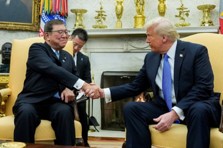
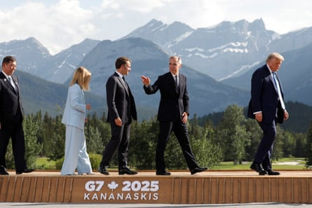

I t all seemed to be going so well. In April, Japan’s chief trade negotiator, Ryosei Akazawa, sat opposite Donald Trump in the Oval Office after “positive and constructive” talks, sporting a Maga baseball cap and giving a thumbs up for the cameras.
Japan ’s economic revitalisation minister drew criticism back home for the gesture, forcing him to insist there was “no political significance” behind it. But the backdrop to the offending photo was far more significant than the uncomfortable optics.
Akazawa’s trade delegation was in Washington to begin tariff negotiations with its American counterparts that officials in Tokyo were initially optimistic would end with Japan’s exemption from Trump’s most egregious protectionist instincts .
“A Great Honor to have just met with the Japanese Delegation on Trade,” Trump wrote on Truth Social after meeting Akazawa. “Big Progress!”
Eleven weeks and seven rounds of talks later, Japan and the US have reached an impasse, with Trump unleashing on his country’s most important ally in the Asia-Pacific the kind of invective he once reserved for China and the European Union: “They won’t take our RICE, and yet they have a massive rice shortage,” he wrote online, adding it showed “how spoiled countries have become”.
The friction is beginning to seep into other parts of the bilateral relationship, with Tokyo and Washington at odds, to varying degrees, on the cost of hosting American troops in Japan and recent attacks by the US and Israel on Iran.
To add insult to injury, the chasm that has opened up between Tokyo and Washington on trade came as the US agreed to slash reciprocal tariffs on Vietnamese imports from 46% to 20%.
Japan now has just days before the end of Trump’s 90-day pause on the imposition of punishing tariffs to pull off a breakthrough.
President Donald Trump meets with Japan’s prime minister Shigeru Ishiba at the White House in February.Photograph: Kent Nishimura/Reuters
Much will depend on Akazawa’s ability to convince American negotiators to withdraw or reduce a 25% levy on Japanese cars imposed in April. That is on top of a possible rise in reciprocal duties on other Japanese goods to 24% from the current baseline of 10%.
But if anything, the mood music from Washington indicates that Trump is even less inclined to make concessions ahead of the president’s second tariff “ liberation day ”, despite constant reminders from senior politicians in Tokyo of the value Japan brings to the US economy.
They include the prime minister, Shigeru Ishiba , who noted this week that Japan is the largest foreign investor in the US and its biggest contributor in terms of job creation. “Our hope is that this will be taken into consideration,” he said.
Just days earlier, Trump had framed Japan in terms that prompted as much consternation as anger on this side of the Pacific.
Speaking to reporters on Air Force One, he floated the idea of raising tariffs on imports from Japan to 30% or 35%, and bemoaned its consumers’ lack of enthusiasm for American cars and rice.
“I’m not sure we’re going to make a deal. I doubt it,” Trump said, labelling Japan “very tough” and “very spoiled”.
Japan has much to lose if it fails to secure an extension to the deadline on reciprocal tariffs or convince the US to lower duties. The US is Japan’s second-biggest trading partner after China, with exports to the US totalling $148.2bn last year.
Trade between the two countries was worth an estimated $227.9bn last year, while the autos sector is already suffering from existing tariffs, with exports to the US dropping 25% in May compared to a year ago.
That will not put the brakes on Trump’s mission to hack away at Japan’s $68bn trade surplus with the US – hence his recent demands that it increase imports of US oil and other goods.
The trade row has landed Ishiba and his government in a predicament every bit as sticky as the early-summer heat and humidity blanketing Japan.
Battered by funding scandals, soaring rice prices and a cost-of-living crisis, Ishiba’s administration is limping into the campaign for upper house elections on 20 July, nine months after his Liberal Democratic party (LDP) and its junior coalition partner lost their majority in the lower house.
Japan’s prime minister Shigeru Ishiba with other world leaders including Donald Trump at the G7 Summit in Canada.Photograph: Amber Bracken/Reuters
Any inkling that Tokyo is prepared to bend to Trump’s demands will not go down well with voters, while analysts warn that the economic impact of accepting higher tariffs could push the Japanese economy – the world’s fifth biggest – into recession.
Japan’s rice crisis has also become a point of contention, as the government attempts to bring down prices with the release of almost all of its 1m tonnes of stockpiled grain, along with a rise in cheaper imports .
Japan has imported historically high volumes of US rice in recent months, and yet despite Trump’s threats, is reluctant to agree to anything that would ignite anger among rice farmers – a politically influential group in the LDP.
Washington is also pressuring Japan to boost imports of other US farm products, as well as cars and oil, to help reduce the trade deficit.
Japan has declined to comment on Trump’s threat to impose even higher tariffs, saying it would pursue “sincere” bilateral talks. “We are aware of what President Trump said, but we don’t comment on every remark made by US government officials,” the deputy chief cabinet secretary, Kazuhiko Aoki, said this week
“We intend to advance bilateral talks in a sincere and faithful manner toward reaching an agreement that will benefit both Japan and the United States.”
Tariffs, though, are putting strain on what the former US ambassador to Tokyo, Mike Mansfield, once described as the “most important bilateral relationship in the world, bar none”.
After failing to make progress with Trump during a meeting at the G7 in Canada last month, Ishiba abruptly cancelled plans to attend the Nato summit in The Hague – a move analysts attributed to ongoing friction over trade.
Japan also declined to offer full-throated support for the US attacks on Iran, saying only that it “understood” Washington’s determination to halt Tehran’s nuclear weapons programme.
This week, the US secretary of state, Marco Rubio, called off his first visit to Japan and South Korea, saying he was needed in Washington for talks with the Israeli prime minister, Benjamin Netanyahu.
Amid rumours that he is preparing to make yet another trip to Washington this weekend, Akazawa has limited room for manoeuvre – and precious little time, according to analysts.
“Practical and electoral constraints will prevent Japan from offering major concessions on autos, rice, and oil, with negotiators set to continue their slow-and-steady approach,” said James Brady, vice-president of the political risk advisory firm Teneo.
“The probability of a deal being reached before next week’s [tariff] deadline appears increasingly low.”